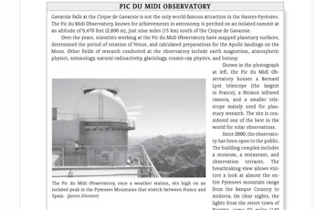

| Research | Publications | About Me |
Outreach |
Photography |
| Outreach |
|
|
Since my undergraduate days I have been an avid volunteer at observatory openhouses. From 2008 to 2009 I
took the role of observatory co-coordinator at Queen's University which required me to be
responsible for all outreach activities at the observatory. I
am very fond of producing astronomy content for public education,
having contributed to Astronomy Now magazine in the UK and given public
lectures both in the UK and Canada. During 2008-2009 I hosted and produced an astronomy radio show on CFRC called Astrarium, which was rebroadcast on Astronomy.FM and can also be found on iTunes including the new series two... I was lucky enough to attend a workshop run by the NASA Center of Astronomy Education, a workshop aimed at providing effective techniques to teach astronomy to students with non science backgrounds. Skills I later got to use when I was employed as a sessional lecturer at the Univeristy of Ontario Institute
of Technology, teaching an introductory astronomy course. I am also a keen photographer; some of my photos of observatories, such as of Gemini North, have been featured in featured in outreach material and a textbook. 
|
Public Lectures Given:
Jun 2013 - North Essex Astronomical Society, UK
Jan 2012 - Royal Astronomical Society of Canada, Kingston, Canada
May 2009 - Queen's University MiniU 2009
Nov 2009 - Queenʼs University, Astronomy History Day
Feb 2008 - Armagh, Northern Ireland
May 2006 - Royal Astronomical Society of Canada, Kingston, Canada
Summer 2003 - North Essex Astronomical Society, UK
Summer 2003 - Loughton Astronomical Society, UK
|